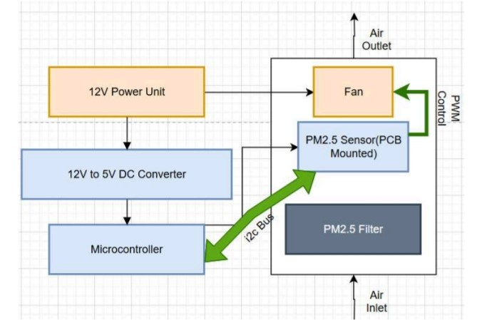

Overview
The Electric Air Purification System for Particulate Matter is a smart air purifier designed to monitor and filter harmful particles like PM₂.₅ and PM₁₀ in real time. Developed by a team of electrical engineering students, the system integrates a microcontroller, high-precision sensors, and an adaptive filtration mechanism to provide an efficient and affordable solution for indoor air quality management.

Figure 1: System overview diagram showing main components
Conclusion
This project delivers a cost-effective, smart air purifier that addresses indoor air pollution through real-time monitoring and automated filtration. By leveraging affordable materials (e.g., repurposed car filters) and IoT-enabled controls, the team aims to make air quality management accessible in regions like Pakistan, where pollution poses significant health risks.

Figure 9: Completed air purification system prototype
For further details, refer to the full thesis or contact the team.
Contact the Team